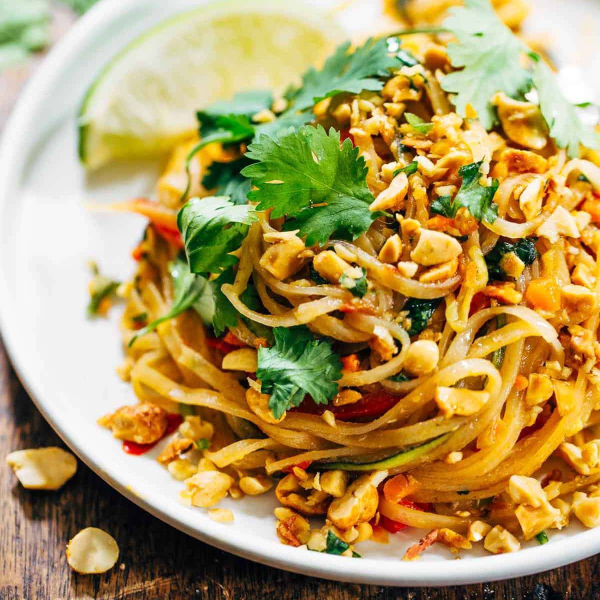

Vegetarian Pad Thai Extravaganza
Cook Time: 35 Minutes

Ingredients:
- 8 oz (225g) rice noodles
- 2 tablespoons vegetable oil
- 1 cup tofu, cubed
- 2 cloves garlic, minced
- 1 cup broccoli florets
- 1 carrot, julienned
- 2 cups bean sprouts
- 3 green onions, sliced
- 1/4 cup roasted peanuts, chopped
- 2 tablespoons soy sauce
- 2 tablespoons tamarind paste
- 1 tablespoon maple syrup or brown sugar
- 1 teaspoon chili flakes (adjust to taste)
- Lime wedges for serving
- Fresh cilantro for garnish
Instructions:
- Cook the rice noodles according to package instructions. Drain and set aside.
- In a large wok or skillet, heat vegetable oil over medium-high heat. Add cubed tofu and stir-fry until golden brown. Remove tofu from the pan and set aside.
- In the same pan, add minced garlic, broccoli, and julienned carrot. Stir-fry for 2-3 minutes until vegetables are slightly tender.
- Add cooked noodles, bean sprouts, green onions, and cooked tofu to the pan.
- In a small bowl, whisk together soy sauce, tamarind paste, maple syrup (or brown sugar), and chili flakes. Pour the sauce over the noodles and toss to combine.
- Cook for an additional 2-3 minutes until everything is heated through.
- Serve the Vegetarian Pad Thai hot, garnished with chopped peanuts, lime wedges, and fresh cilantro.
- Enjoy your delightful Vegetarian Pad Thai!
Savor the flavors of Vegetarian Pad Thai!